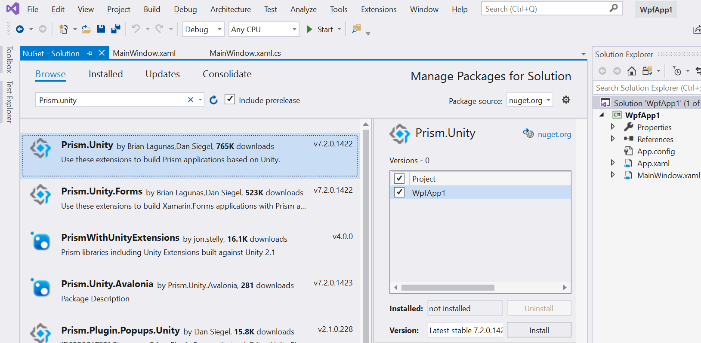
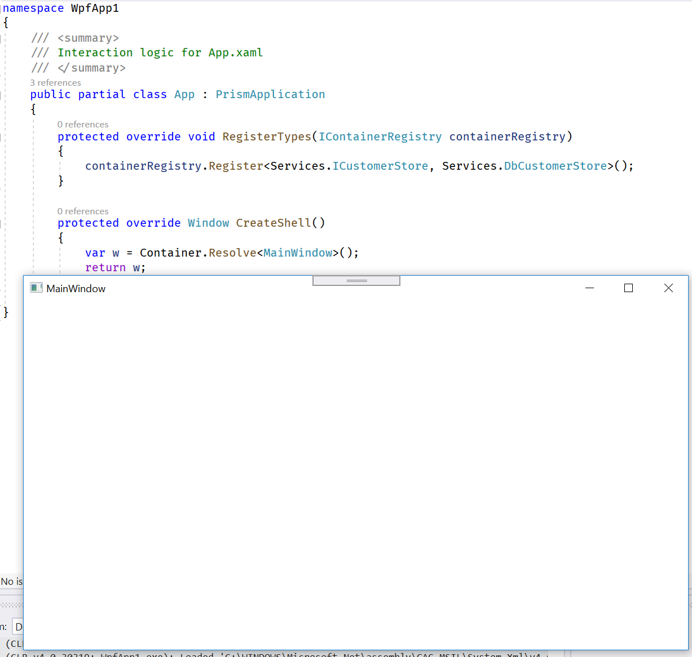
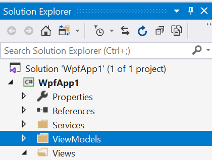
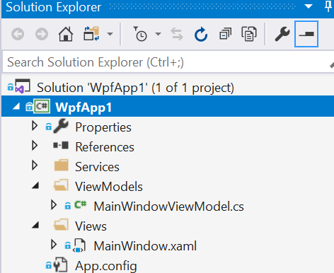

Getting Started
Getting started with Prism is pretty easy. Follow the steps below and you will be up and running quickly with the start of a modular and easy to maintain app.
This guide assumes that you have some knowledge of the structure of a WPF application project and some comfort with C#. An understanding of the Model-View-Viewmodel (MVVM) pattern is helpful as well as WPF lends to that pattern very easily. If you aren't, consider taking a moment to do a bit of research on it first.
Install the Nuget Packages
Create a brand new WPF application in Visual Studio. Next up is to install the appropriate nuget packages. At this point, a choice needs to be made, and that is which container to use for managing dependencies. For the purposes of this documentation, Unity will be the container of choice. See the list below of what is available.
| Package | Container | Version |
|---|---|---|
| Prism.Unity | Unity | 5.11.1 |
| Prism.DryIoc | DryIoc | 4.0.7 |
Note: There is no need to explicitly install any other dependencies. Installing one of the above packages will also take care of installing the packages for the container as well as the shared Prism packages.

Override the Existing Application Object
The next step in getting started is to subclass the Application object contained in the newly created WPF project. Navigate to the App.xaml and replace the standard WPF Application class with the Prism PrismApplication class.
<prism:PrismApplication
x:Class="WpfApp1.App"
xmlns="http://schemas.microsoft.com/winfx/2006/xaml/presentation"
xmlns:x="http://schemas.microsoft.com/winfx/2006/xaml"
xmlns:local="clr-namespace:WpfApp1"
xmlns:prism="http://prismlibrary.com/">
<Application.Resources>
</Application.Resources>
</prism:PrismApplication>
In the snippet above, notice that line 6 has been added to define the namespace and that the App object has been updated to derive from PrismApplication. Next, navigate to the app.xaml.cs code-behind file and update the class definition.
Don't forget to remove the
StartupUriproperty from thePrismApplicationtag. Otherwise, you will end up with two window instances.
using System;
using System.Collections.Generic;
using System.Configuration;
using System.Data;
using System.Linq;
using System.Threading.Tasks;
using System.Windows;
using Prism.Unity;
namespace WpfApp1
{
public partial class App : PrismApplication
{
}
}
There are a pair of abstract methods defined in PrismApplication that must be implemented first: RegisterTypes and CreateShell.
RegisterTypes
This function is used to register any app dependencies. For example, there might be an interface to read customer data from a persistent store of some kind and the implementation of it is to use a database of some kind. It might look something like this:
public interface ICustomerStore
{
List<string> GetAll();
}
public class DbCustomerStore : ICustomerStore
{
public List<string> GetAll()
{
// return list from db
}
}
Objects in the app, such as view models, that have a dependency on the customer data would require an ICustomerStore object. In the App.RegisterTypes function, a registration would be made to create a DbCustomerStore every time an object takes a dependency on ICustomerStore.
protected override void RegisterTypes(IContainerRegistry containerRegistry)
{
containerRegistry.Register<Services.ICustomerStore, Services.DbCustomerStore>();
// register other needed services here
}
IContainerRegistry has other functions for registering against interfaces as well.
RegisterInstancewill register a created instance of an object against an interface. In effect the implementation of the registered interface is a singleton. A similar method isRegisterSingletonthat will create a single instance at the time the dependency is made and not before. It should be noted that theContainercan also resolve concrete types without a prior registration.
CreateShell
The second method that has to be implemented is the CreateShell method. This is the method that will create the main window of the application. The Container property of the App class should be used to create the window as it takes care of any dependencies.
public partial class App : PrismApplication
{
// RegisterTypes function is here
protected override Window CreateShell()
{
var w = Container.Resolve<MainWindow>();
return w;
}
}
At this point, the app can be built and run and should look like the following:

This is now a Prism app. There isn't much here yet, but there are lots of things that Prism can help out with, such as breaking up the app into manageable chunks, navigation and implementing the MVVM patterns.
View Models
WPF is well setup to use an MVVM pattern and Prism helps a lot with this. It has a base class that handles the INotifyPropertyChanged infrastructure that publishes changes from the view model to the view. There are some other classes that make it simple to handle buttons from within the view model as opposed to writing an event handler in your code behind.
First there needs to be some controls added to the view. Go to MainWindow.xaml and add the following <Grid> markup as the content for the <MainWindow>.
<Grid>
<Grid.RowDefinitions>
<RowDefinition Height="*" />
<RowDefinition Height="Auto" />
</Grid.RowDefinitions>
<ListView
ItemsSource="{Binding Customers}"
SelectedItem="{Binding SelectedCustomer}"
/>
<Button
Grid.Row="1" Width="80" Height="40"
Command="{Binding CommandLoad}"
Content="LOAD"
/>
</Grid>
The above will add a new listview that will display a list of customer names and a button to load the list.
The important thing to remember is that every time there is a
Binding, there is a linkage to the view model for this view.
To help out with this part of the Getting Started Guide, the service that was shown above needs to be setup in the project. In the root of the project, create a Services folder. In that folder, create the CustomerStore.cs file and add the following code:
public interface ICustomerStore
{
List<string> GetAll();
}
public class DbCustomerStore : ICustomerStore
{
public List<string> GetAll()
{
return new List<string>()
{
"cust 1",
"cust 2",
"cust 3",
};
}
}
Inside the App.xaml.cs file, ensure that RegisterTypes has the following line:
containerRegistry.Register<Services.ICustomerStore, Services.DbCustomerStore>();
Creating the View Model
First, at the root level of your project, create a folder called ViewModels. Use that exact name because that will be needed later when view model resolution is discussed.

Inside the ViewModels folder, a class is created called MainWindowViewModel. Use that exact name for reasons to be shown later. Prism has a class called BindableBase that is used as a base for all view models and MainWindowViewModel will be subclassed from it.
using Prism.Commands;
using Prism.Mvvm;
using System;
using System.Collections.Generic;
using System.Collections.ObjectModel;
using System.Diagnostics;
using System.Linq;
using System.Text;
using System.Threading.Tasks;
namespace WpfApp1.ViewModels
{
public class MainWindowViewModel : BindableBase
{
private Services.ICustomerStore _customerStore = null;
public MainWindowViewModel(Services.ICustomerStore customerStore)
{
_customerStore = customerStore;
}
public ObservableCollection<string> Customers { get; private set; } =
new ObservableCollection<string>();
private string _selectedCustomer = null;
public string SelectedCustomer
{
get => _selectedCustomer;
set
{
if (SetProperty<string>(ref _selectedCustomer, value))
{
Debug.WriteLine(_selectedCustomer ?? "no customer selected");
}
}
}
private DelegateCommand _commandLoad = null;
public DelegateCommand CommandLoad =>
_commandLoad ?? (_commandLoad = new DelegateCommand(CommandLoadExecute));
private void CommandLoadExecute()
{
Customers.Clear();
List<string> list = _customerStore.GetAll();
foreach (string item in list)
Customers.Add(item);
}
}
}
A bit of an explanation on what is happening here. MainWindowViewModel has a dependency on the ICustomerStore interface, so that interface has to be registered in the App.RegisterTypes so that its implementation can be handled by the dependency container. There is a Customers property that is bound to the listview in the user interface and a SelectedCustomer that is bound to the currently selected item in the list view.
There is also CommandLoad object that implements the ICommand interface. This has an Execute method that is called when the user clicks on the button. Prism implements the ICommand interface with DelegateCommand class that allows delegates to be passed in to handle implementing the ICommand interface. In the case of CommandLoad, the CommandLoadExecute function is passed in as the delegate and now, whenever the WPF binding system tries to execute ICommand.Execute, CommandLoadExecute is invoked.
For more details on DelegateCommand, see Commanding.
Using the ViewModelLocator
Now there is a view and a view model, but how are they linked together? Out of the box, Prism has a ViewModelLocator that uses convention to determine the correct class for the view model, instantiate it with its dependencies and attach it to the DataContext of the view.
The default convention is to place all the views in the Views folder and the view models in the ViewModels folder.
WpfApp1.Views.MainWindow=>WpfApp1.ViewModels.MainWindowViewModelWpfApp1.Views.OtherView=>WpfApp1.ViewModels.OtherViewModel
This is configurable and different resolution logic can be added.
For this to work, views and viewmodels must be properly located within their correct name spaces. Below is a screen shot of what that would look like:

Click here for detailed information on the ViewModelLocator.
If you don't want to use this capability for some reason, you will have to opt out in your view. You can manage this in your XAML as follows:
<Window
...
xmlns:prism="http://prismlibrary.com/"
prism:ViewModelLocator.AutoWireViewModel="False"
>
<!-- ui controls here -->
</Window>